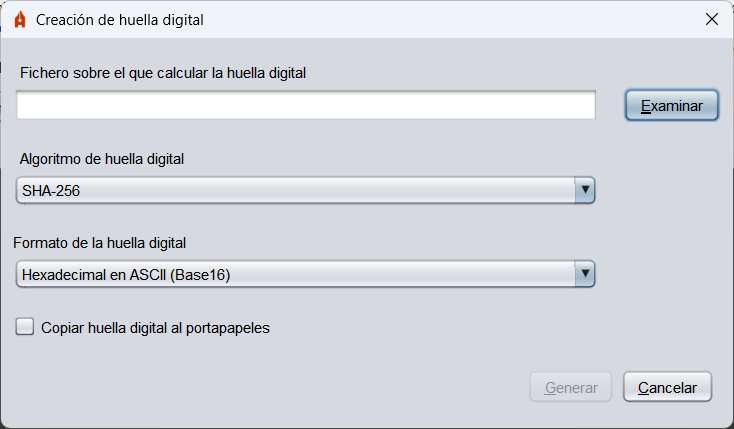
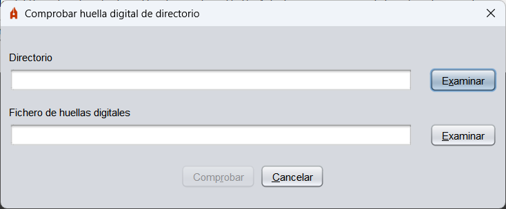

Plugins
A series of plugins are distributed along with Autofirma to add additional features to the application.
Calculation and verification of fingerprints
This plugin adds to Autofirma options to calculate the fingerprint (hash) of a file or all files in a directory and check those same traces that have been generated.
Once the plugin is installed, the "Fingerprints" option will appear in the Autofirma menu bar with the different operations that can be performed.
- Calculate fingerprint: It allows you to calculate the hash of a file and save it to disk. The format and extension of the hash file will vary according to the selected format.

- File on which to calculate the fingerprint: File we want to calculate the hash.
- Fingerprint algorithm: Hash algorithm.
- Format of the fingerprint: Coding used to store the hash:
- Hexadecimal in ASCII (Base16): The footprint shall be stored as a hex chain termed 'h'.
- Base64: The footprint will be stored at Base 64.
- Binary: The fingerprint shall be stored without coding.
- Copy fingerprint to clipboard: By activating this option, in addition to storing the hash in file, it will be copied to the clipboard. The hash shall be copied with the encoding of the selected format or, if the binary format was selected, in hexadecimal.
- Check fingerprint: Allows you to check the hash of a file.

- Data file: A file corresponding to the fingerprint to be checked.
- File containing the fingerprint: File with fingerprint.
- Calculate Digital Footprint in Directory: It allows you to calculate the hash of the files in a directory.

- Directory on which to calculate fingerprints: Directory with the files that we want to calculate the fingerprint.
- Fingerprint algorithm: Hash algorithm.
- Recursive: When activated, the hash of the files located in the subdirectories of the selected directory will also be calculated.
- Check Fingerprint in Directory: It allows you to check the hash of the files in a directory.

- Directory: Directory with the files to which the fingerprints you want to check correspond.
- Fingerprint file: File with the fingerprints to be checked.
When you install the fingerprint plugin on Windows systems, you also add the options to generate and test fingerprints in the context menu of system files and directories.
The options that appear are:
- Generate digital fingerprint: This option appears in the context menu of all files and directories and allows the hash of the file or directory files to be generated.
- Check fingerprint: This option appears in the context menu of the hashes files (.hash, .hashb64, .hashfiles and .hexhash) and allows you to select the file or directory from which you want to check the hash.